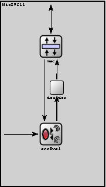
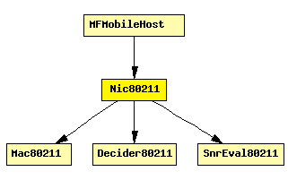

File: NetworkInterfaces/MF80211/Nic80211.ned
This NIC implements an 802.11 network interface card.
This component has been taken over from Mobility Framework 1.0a5.
See also: Mac80211, Decider80211, SnrEval80211
Author: Marc Loebbers
The following diagram shows usage relationships between modules, networks and channels. Unresolved module (and channel) types are missing from the diagram. Click here to see the full picture.
If a module type shows up more than once, that means it has been defined in more than one NED file.
| Decider80211 | Decider module of the 802.11 modules |
| Mac80211 | Implementation of the 802.11b MAC protocol. This module is intended to be used in combination with the SnrEval80211 and Decider80211 modules as physical layer. |
| SnrEval80211 | This component has been taken over from Mobility Framework 1.0a5. |
If a module type shows up more than once, that means it has been defined in more than one NED file.
| MFMobileHost | Models a mobile host with a wireless (802.11b) card in ad-hoc mode. This model contains the Mobility Framework's 802.11 implementation, Nic80211, and IP, TCP and UDP protocols. The mobility model can be dynamically specified with the mobilityType parameter. |
| Name | Direction | Description |
|---|---|---|
| uppergateIn | input | to upper layers |
| uppergateOut | output | from upper layers |
| radioIn | input | to receive AirFrames |
| Name | Type | Description |
|---|---|---|
| mac.address | string | MAC address as hex string (12 hex digits), or "auto". "auto" values will be replaced by a generated MAC address in init stage 0. |
| mac.maxQueueSize | numeric const | |
| mac.rtsCts | bool | |
| mac.bitrate | numeric const | |
| mac.broadcastBackoff | numeric const | |
| decider.debug | bool | debug switch |
| decider.snirThreshold | numeric const | |
| decider.bitrate | numeric const | |
| snrEval.channelNumber | numeric const | channel identifier |
| snrEval.debug | bool | debug switch |
| snrEval.transmitterPower | numeric const | |
| snrEval.bitrate | numeric const | |
| snrEval.headerLength | numeric const | |
| snrEval.carrierFrequency | numeric const | |
| snrEval.thermalNoise | numeric const | |
| snrEval.pathLossAlpha | numeric const | |
| snrEval.sensitivity | numeric const |
module Nic80211 gates: in: uppergateIn; // to upper layers out: uppergateOut; // from upper layers in: radioIn; // to receive AirFrames submodules: mac: Mac80211; display: "p=96,87;i=block/layer"; decider: Decider80211; display: "p=106,157;i=block/process_s"; snrEval: SnrEval80211; display: "p=96,236;i=block/wrxtx"; connections: radioIn --> snrEval.radioIn; decider.uppergateOut --> mac.lowergateIn display "m=m,50,50,75,0"; snrEval.uppergateIn <-- mac.lowergateOut display "m=m,25,0,25,0"; snrEval.uppergateOut --> decider.lowergateIn display "m=m,73,0,50,50"; mac.uppergateOut --> uppergateOut; mac.uppergateIn <-- uppergateIn; endmodule